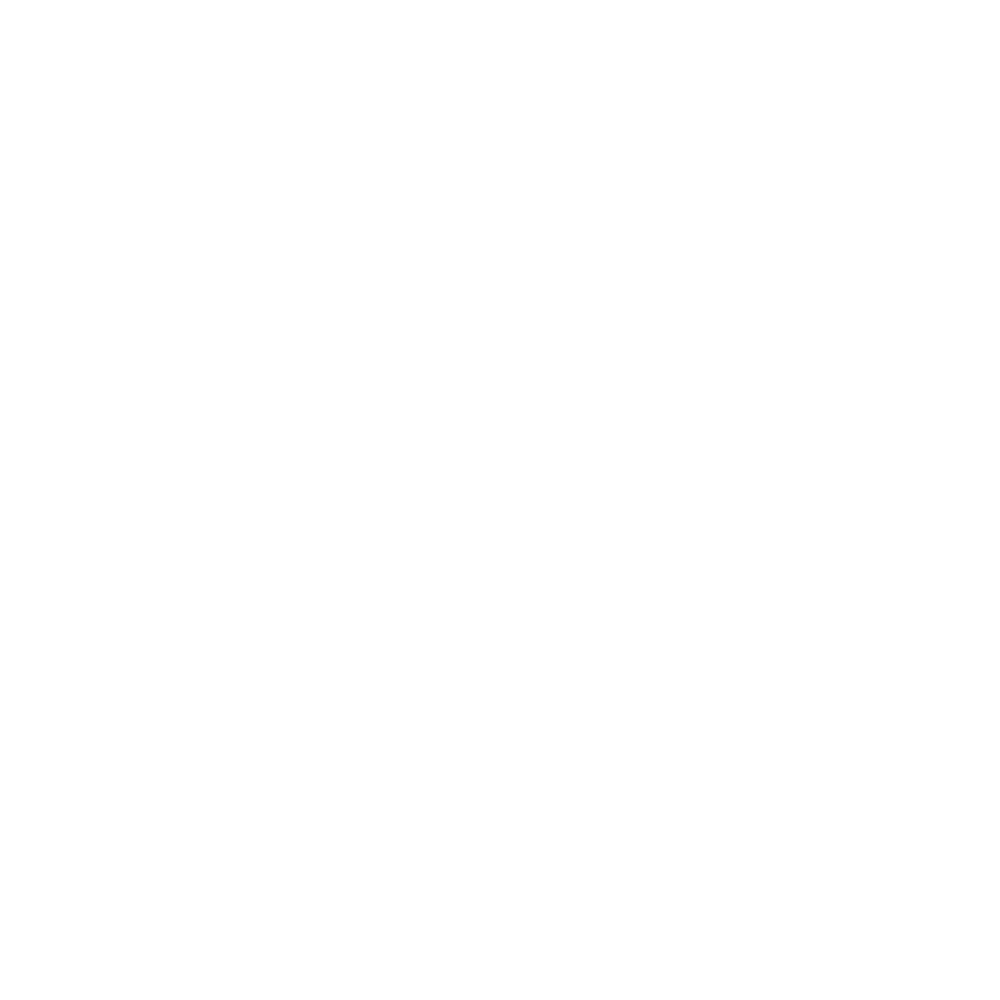
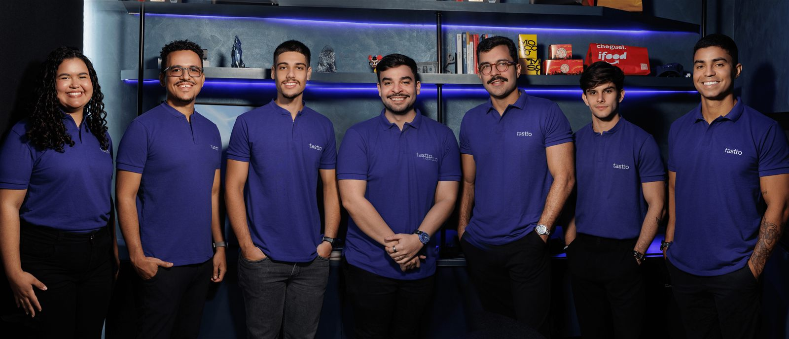
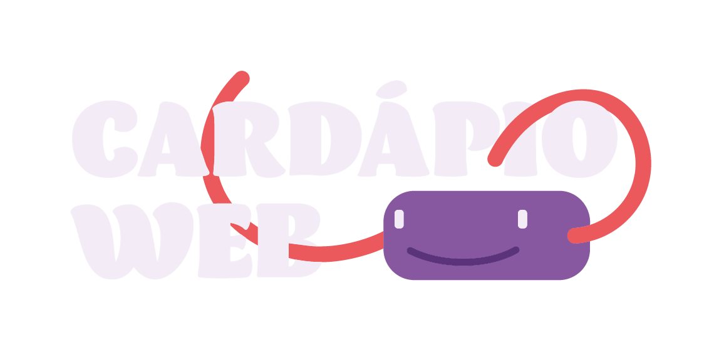
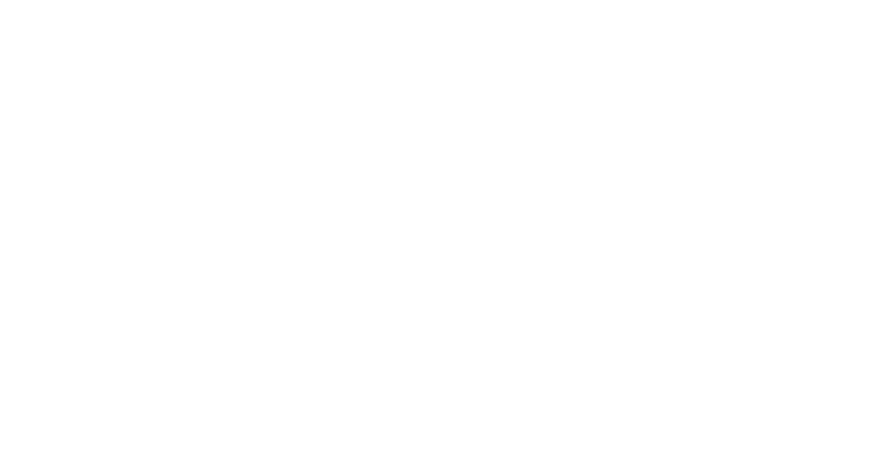
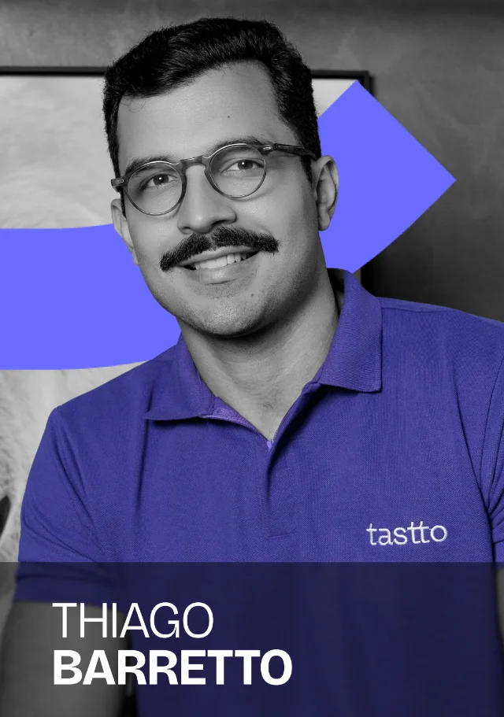
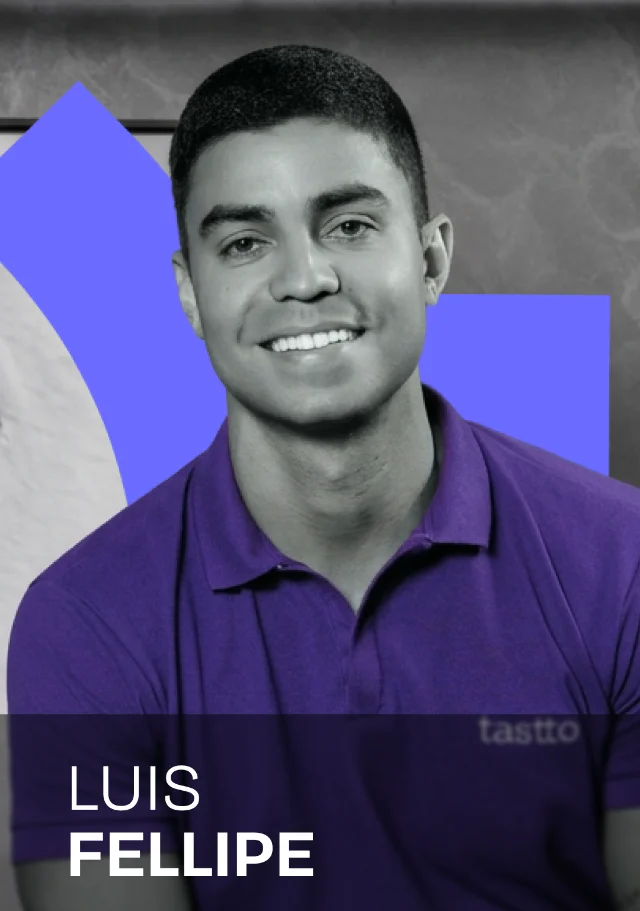
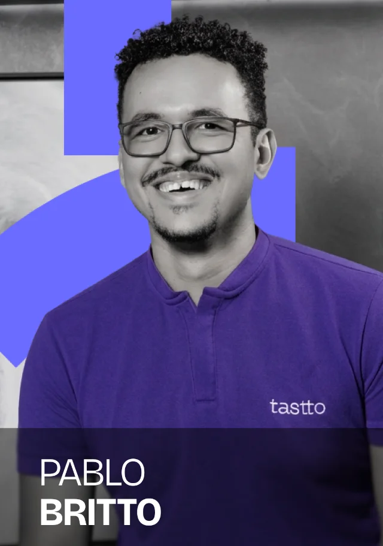
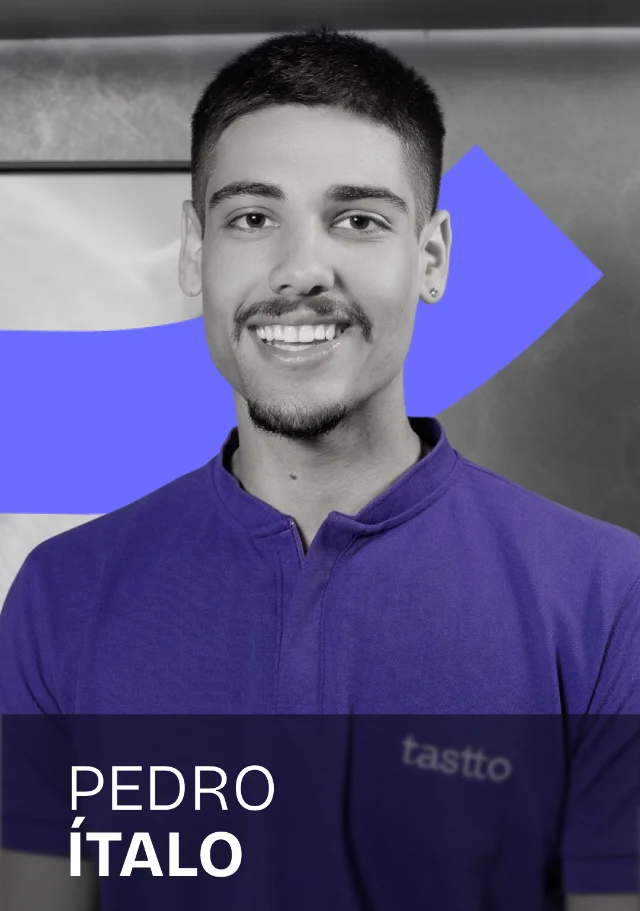
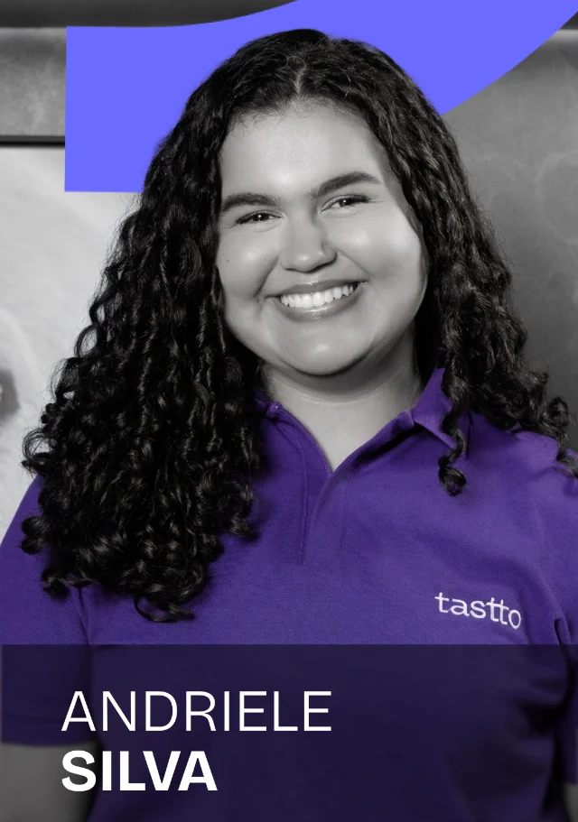
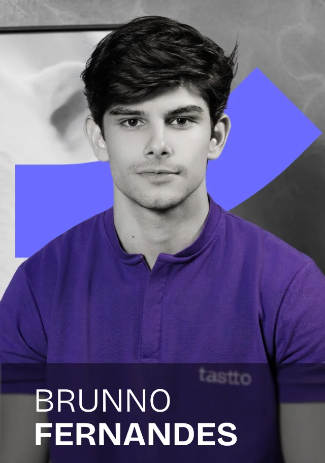

Operação de Salão
Estratégias para aumentar ticket médio, melhorar a experiência presencial e fazer o salão vender com mais inteligência.
Estratégia, dados e retenção pra transformar pedido em cliente que volta, sem depender só do apetite do iFood.

SERVIÇOS
Não entramos apenas para fazer divulgação. Entramos para organizar crescimento, reposicionar a marca, estruturar a comunicação e transformar dados em decisões melhores.
PILARES
Cinco pilares estratégicos que a Tastto utiliza para fazer restaurantes baterem recorde de faturamento.
Não achou o seu? A gente atende também →

EQUIPE
Somos a Tastto, um time especializado em crescimento para restaurantes. Juntamos estratégia, dados, mídia, CRM e relacionamento para tirar o restaurante do achismo.
Não trabalhamos à distância. Estamos nos salões, nas cozinhas e nos eventos do food service, conversando com quem opera o restaurante todos os dias.
FERRAMENTAS
Trabalhamos dentro das plataformas que já fazem parte da rotina do seu restaurante: mídia, cardápio digital, delivery e CRM, conectados pra transformar cada pedido em dado e cada dado em decisão.


DEPOIMENTOS
TIME
Especialistas em crescimento que vivem o dia a dia do food service, do salão ao delivery.

Diretor
Analista
Analista
Analista
Analista
AnalistaCONTATO
Conta um pouco sobre o seu restaurante. Um especialista do nosso time entra em contato pra entender o seu momento.
FAQ
Ainda tem dúvidas? Fique à vontade para entrar em contato. Teremos prazer em ajudar.
Sim. Atendemos operações de diferentes nichos da alimentação, com foco em restaurantes que querem crescer com mais estratégia, clareza e estrutura.
Não. A Tastto não atua só com delivery. Também atendemos restaurantes que trabalham apenas com salão e querem melhorar posicionamento, recorrência, comunicação e resultado. E, para quem atua com delivery, ajudamos a estruturar esse canal com mais organização e potencial de crescimento.
Ajudar seu restaurante a crescer com inteligência, fortalecer salão e delivery, melhorar recorrência, organizar a comunicação com os clientes e usar dados para tomar decisões melhores.
Marketing que funciona de verdade não é mágica: é processo. Nossos clientes começam a enxergar mudanças concretas em até 6 meses: mais clareza sobre o que funciona, campanhas mais eficientes e decisões baseadas em dados reais. E ao longo desse caminho, você já vai sentindo a diferença nas análises e no direcionamento do seu negócio.
Não é obrigatório. Trabalhamos com restaurantes em diferentes estágios, desde os que ainda operam de forma mais manual até os que já têm sistemas robustos. Ter um sistema de gestão ajuda a acelerar os resultados, mas o ponto de partida é o que você já tem hoje.